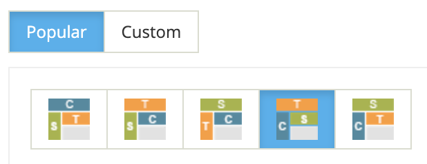

23 World Bank Data
Up until now, we have provided the data. This insulates students from an ugly reality: data hardly ever arrives like Census data from our plugin, arranged nicely in a table. Nevertheless, there is a lot of interesting data out there, so it’s good for students to have the experience of finding data “in the wild.”
The World Bank has a vast collection of data about global development, stretching over several decades and throughout the world. They make their data freely available on their site, ready to download. But it’s not trivial by any means, so this project has very specific instructions for downloading that (unlike many things in our students’ lives) they will have to follow to the letter or their data will be a mess.
More on this later, but first, some background and the presenting task.
23.1 Background
On their home page, you can read their mission: “The World Bank Group has two goals, to end extreme poverty and promote shared prosperity in a sustainable way.” In support of that, they set goals, promote policies, and collect data.
One of their products involves what they call “Sustainable Development Goals,” which are quite exciting and ambitious. To measure progress towards these goals, they collect data. You (and students) can explore these goals.
23.2 Getting the data
But to do that, you need the data. This section has carefully-written instructions for that.
Often, instructions in this book are somewhat flexible. If you’re using CODAP, and you do something in the wrong order, mostly things will still be OK.
That’s not the case with the World Bank website. Follow these instructions carefully. You have been warned.
(Want to be careful but don’t feel like reading? There is a video of all this below, which I made for a high-school class.)
These instructions will lead you through the details of getting an extract from the World Bank site—a csv file suitable for dragging into CODAP. There are other things you can do on that site; it’s worth exploring to see what visualizations and tables you could see.
For this example, let’s pretend we’re interested in agricultural development. We will get information on grain production in Chile and Argentina. This is related to development goals and it generally has good data. Some data “series” can be sparse and not interesting.
Go to the World Bank Databank. You will see Explore Databases.
Below that, click on “World Development Indicators.”
On the left, click on Layout, then “Popular.” Choose the fourth option:

Return from Layout to Variables. In the panel below Variables, we have to specify four things: Database, Countries, Series, and Time.
- Database is “World Development Indicators.” Leave it as it is.
- For Country, choose countries in the panel that says All | Countries | Aggregates. You may choose any number of countries. Since we are exploring grain production in Chile and Argentina, check boxes for those two countries. Then close the Country panel.
- If you want to look at stats for a region, choose Aggregates in that panel.
- If you press the filter (looks like a gray funnel) icon, you can choose some group (e.g., sub-Saharan Africa) to filter the list of countries. That way it’s easy to, for example, choose to add all of the countries in Sub-Saharan Africa.
- For Series (i.e., variables), pick a small number of these. Even one. You can search for something you’re interested in. For our example, search for “Cereal,” which means “grain.” That’s good for agricultural food production. You’ll see three attributes. Check them all! Another good one to get is the population; it’s called population, total.
- Other examples of Series:
- Electricity production from Coal Sources
- Physicians per 1000 people
- Population ages 0–14 (%)
- Other examples of Series:
- For Time (i.e., which years you want data from), choose the blue 10 to get the 10 most recent years.
Press the Apply Changes button. You will get a preview of your data. Make sure it’s what you want!
Now click Download Options (upper right).
- Don’t just go directly to CSV!! Choose Advanced options.
- Choose the CSV tab to get the “advanced” CSV panel.
- Change Text Field Delimiter to none
- Change NA Preference to blank. (This specifies how they code missing data.) It will look like this:

Click Download. You will get a .zip file, which you should extract. This produces a folder wit two files; one will have a ridiculous name ending in
...Data.csv, which you can change (but keep the .csv suffix). That’s the one we want. The other file ends in....Metadata.csv. You won’t need it for now.Optional: the .csv file may have about 5 lines of extraneous information at the end. Of course it does! Open the file with a text editor and remove them. Alternatively, delete the garbage cases it creates once you are inside CODAP.
Drag the file into CODAP!
Video version (11 min) https://youtu.be/cs9J4HE-ztI
23.3 Example World Bank Task
This is the written version of a task that students saw on the course website. I had also given the instructions orally in class, so this is meant to be sufficient to help students remember what I said—or complete the assignment succesfully if they were absent.
It also included a link to the instructions, which appear above.
For this week’s project, you’ll get development data from the World Bank databank.
A supposed expert says: “South Asia is about 20 years behind Latin America in development.”
You ask, what data do you have for this? He shows you the graph at this page. “See?” he says, “if we just look at fertility rate, both regions are decreasing, which is good. But South Asia is now where Latin America was about 20 years ago.”
That looks about right but you wonder whether this one measure tells the whole story. Add nuance to this. For example, you could get data on cereal (grain) production and see if that 20-year lag holds in that area. Or you may want to live dangerously and explore some other data (you could look at the UN development goals for ideas.) You may look at the whole regions, or you might want to pick a country or two from each to study.
Your graphs should probably have time (i.e., year) on the horizontal axis!
As before, write this up in a Google Doc. Include a link (or links) to your CODAP doc(s). Start with a claim (or question or “I wonder…”). Show an initial take on your topic. Then dig deeper, possibly more than once. If you have something else to say, I love to read appendices.
Examples of attributes that seem to work!
- GNI per capita (Gross National Income)
- Individual use of Internet as % of population
- Literacy (adults, youth)
- Poverty rates at various levels
- Mean Life Expectancy
- Death rates (search: mortality?) for young people (several categories; you could add them together)
- Percent of rural with electrification (when will South Asia reach 100%?)